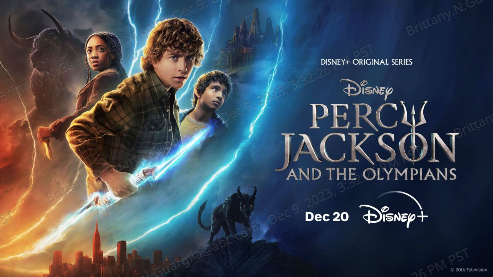

I am putting my thoughts aside to be optimistic. The casting is wonderful, the show looks good,
people are talking about it,and it got greenlit for season 2...
however, here is my ranking, because they still went off the books for some reason AND the
the charachters have read the books apparently, because they know exactly what's about to
happen for half the show*

*I was going to make this change text based on selected episode, but seemed like it involed JS, so future plan :)